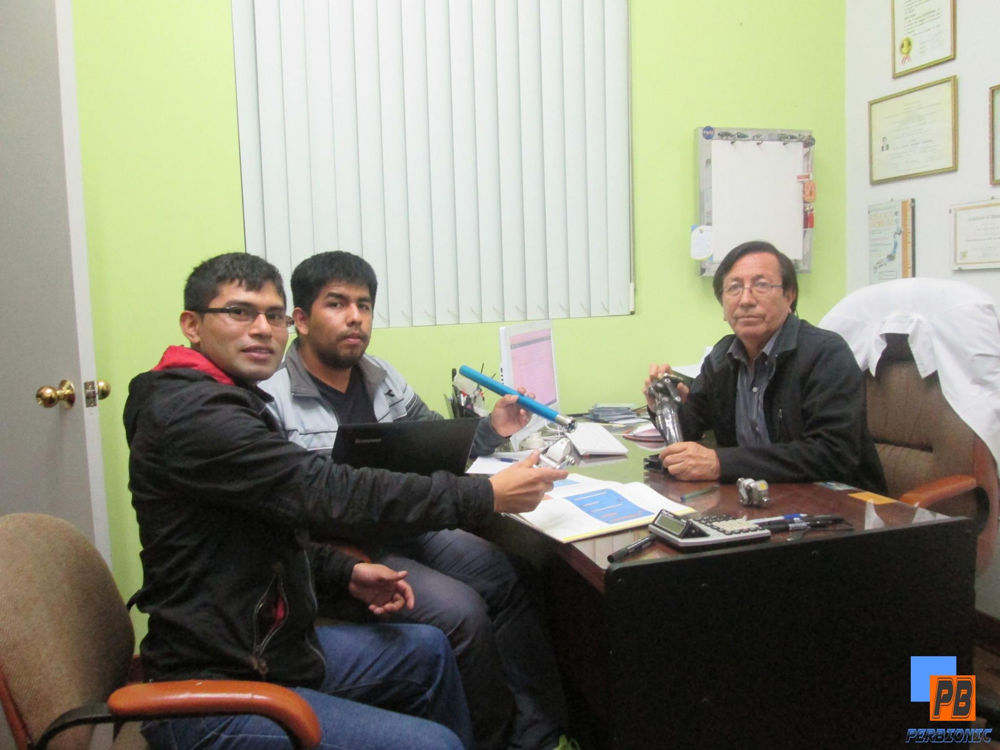

¿Quiénes somos?
Somos una empresa peruana enfocada en crear soluciones de salud con alto impacto social.
Contamos con profesionales de ingeniería de sistemas, biomédica y medicina.

Nuestras soluciones inclusivas
Desarrollamos productos y servicios para hospitales, clínicas, centros de rehabilitación y pacientes:
| Servicio / Producto | Descripción | Beneficio principal |
|---|---|---|
| Prótesis personalizadas | Diseño y fabricación con ajuste anatómico para cada paciente. | Mayor autonomía y reintegración a actividades diarias. |
| Órtesis funcionales | Soporte biomecánico para recuperación y prevención de lesiones. | Reducción del dolor y mejora de movilidad. |
| Vehículos inclusivos | Adaptación de movilidad asistida para uso urbano y clínico. | Transporte seguro para personas con discapacidad. |
| Mantenimiento de equipos médicos | Diagnóstico, calibración y mantenimiento preventivo/correctivo. | Continuidad operativa y seguridad en atención de pacientes. |
| Software inclusivo | Programación de sistemas embebidos, así como creación de software con accesibilidad. | Herramientas que se adaptan a las necesidades de los usuarios. |
Nuestros aliados
La sinergia nos permite seguir alcanzando retos más complejos, con TW trabajamos de forma conjunta desde hace unos años, para conocerlos pueden acceder a su fanpage de TW Salud y Vida y así también visualizar sus productos y servicios.
Haz clic aquí para ir a sus redes sociales:

Proyectos Open-Source
Enable ViaCAM: Control del puntero con movimientos de cabeza.